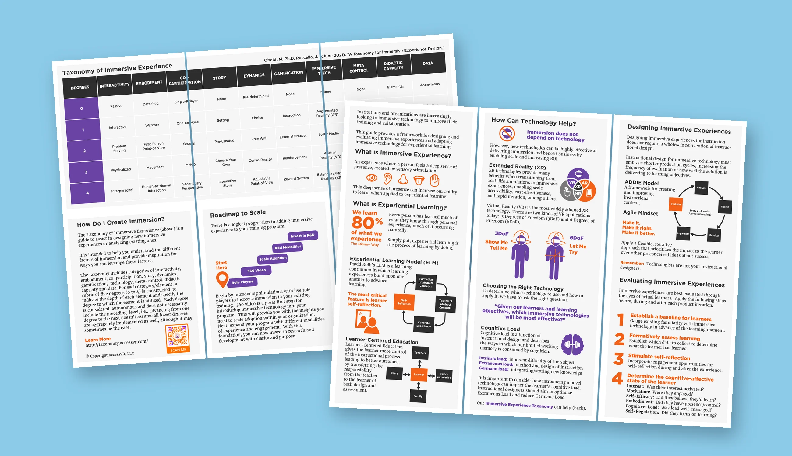
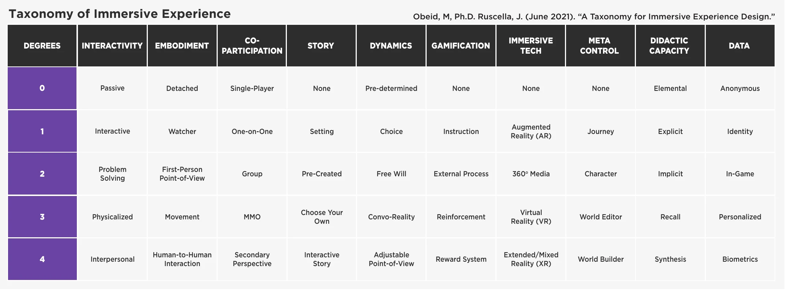
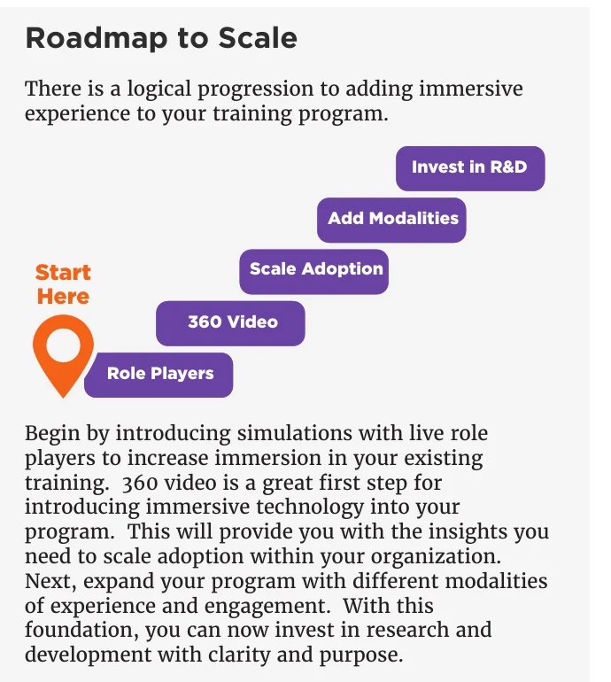
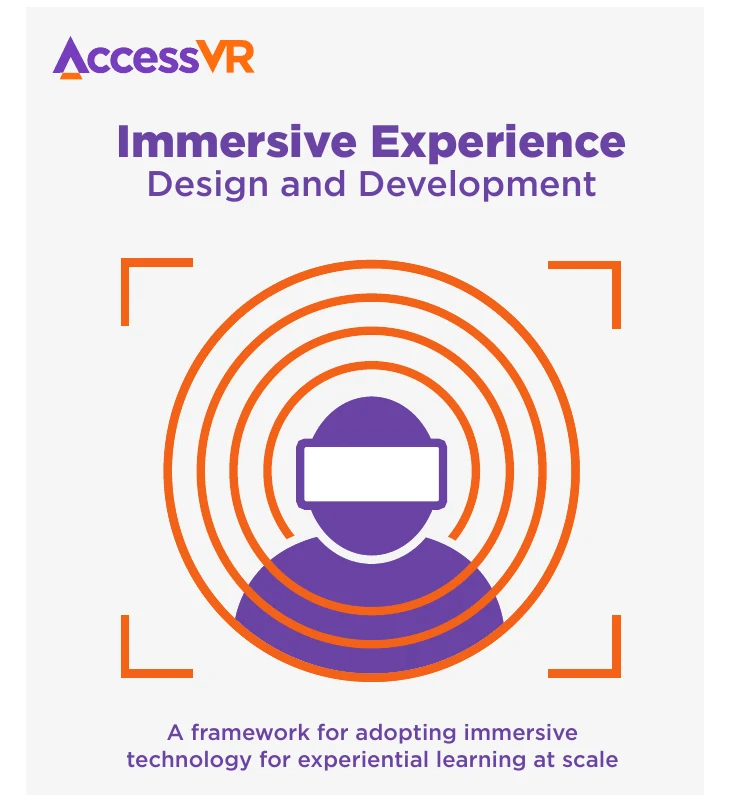
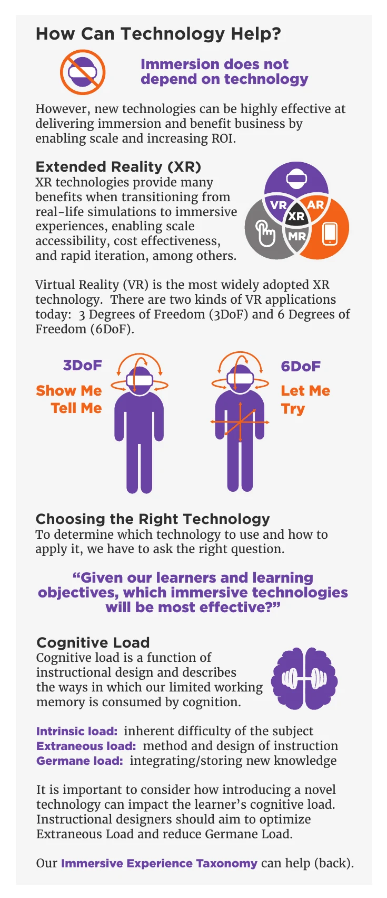
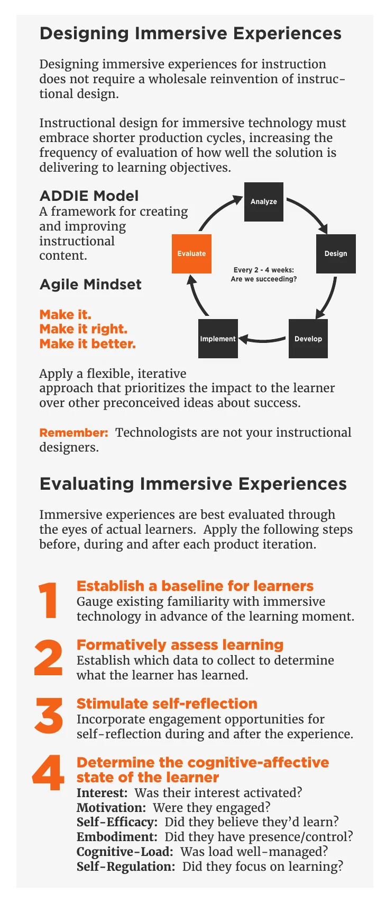

XR for Training: DHS
How should a federal agency adopt immersive training? A two-year answer, made usable.
2 yrslandscape assessment
$2Mprogram
10factors of immersion, mapped

- Client
- U.S. Department of Homeland Security
- Company
- AccessVR [confirm years]
- Role
- Researcher and Design Director
- Team
- [Team size]
- Discipline
- Research, landscape assessment, framework and guide design
Challenge
DHS wanted to know whether immersive technology could improve its training, and how to adopt it without wasting money on hardware that sits in a closet.
Solution
- A two-year, $2M landscape assessment of immersive technology for training.
- Research into the trends, challenges and opportunities of immersive learning, written up as the Landscape Assessment on Immersive Learning report.
- The findings were distilled into a pocket guide: what immersion is, how to design for it, which technology fits, how to measure it, and a roadmap that starts small with role players and 360 video.
My role
- Key member of the assessment team, researching trends, challenges and opportunities in immersive learning
- Developed the content for the Landscape Assessment on Immersive Learning report
Highlights





Results
- The findings led to founding AccessVR and building OrchestrateXR to put immersive training in trainers’ hands.
- [Add other outcomes: agencies or programs that used the guide]